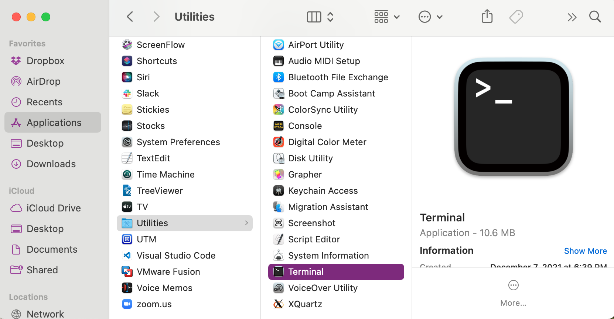

Bash Setup
First, click here to download the materials you will need to complete the hands-on tutorial. Place the zipped folder on your Desktop and unzip it.
Next, scroll to find your operating system for specific setup instructions.
Windows
Windows does not come automatically equipped to run Bash, but there are a couple of options to get it running on your machine.
Option 1: Windows Subsystem for Linux
If you are running Windows 10 version 2004 and higher (Build 19041 and higher) or Windows 11, Windows Subsystem for Linux (WSL) can be installed on your computer by following the instructions here. Note that there is no need to change the default Linux distribution.
Option 2: Git for Windows
In addition to providing you with access to Git, Git for Windows also comes with a Bash emulation. You can download the installer here and there are further instructions here if you need them.
MacOS
The default shell in MacOS is either Bash (older Macs) or zsh (newer Macs). The two shells are highly similar and the differences will not matter for this bootcamp or for the workshop.
To access Bash or zsh, you will need to open the terminal. You can find the terminal application in /Applications/Utilities:

Or by using the Spotlight search feature:

Make sure that you can find and open your terminal! If you're curious about your default shell, it should be listed in the top bar of the terminal. Alternatively, type echo $SHELL in a terminal and press the Enter key. If the message printed does not end with /bash then your default is something else and you can run Bash by typing bash. However, zsh is also acceptable for this tutorial.
Linux
The default shell is usually Bash and there is usually no need to install anything.
To see if your default shell is Bash type echo $SHELL in a terminal and press the Enter key. If the message printed does not end with /bash then your default is something else and you can run Bash by typing bash.